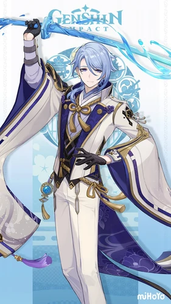
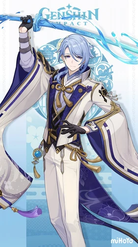
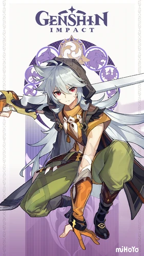
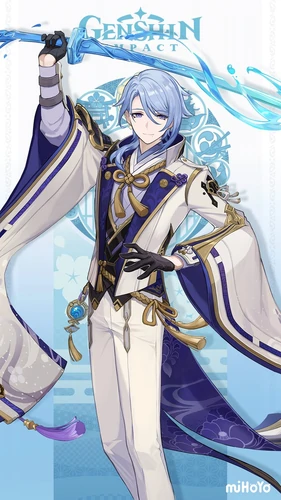
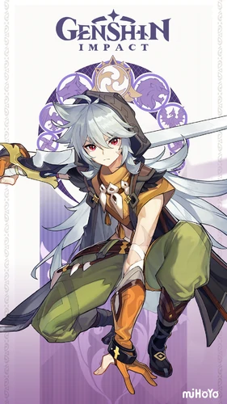
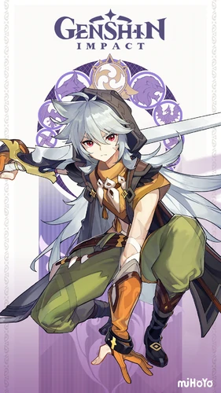
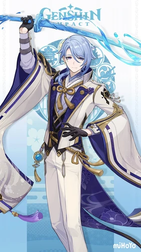
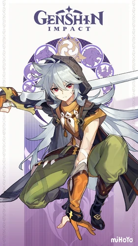

 






2-Piece: ATK +18%. 4-Piece: When Normal Attacks hit opponents, there is a 36% chance that it will trigger Valley Rite, which will increase Normal Attack DMG by 70% of ATK. This effect will be dispelled 0.05s after a Normal Attack deals DMG. If a Normal Attack fails to trigger Valley Rite, the odds of it triggering the next time will increase by 20%. This trigger can occur once every 0.2s.
 ← Return
← Return